Donasi Pembangunan & Kegiatan Masjid
Masjid Baburrahman yang terletak di Dusun Pontung, Desa Pasokan, Kec. Walea Besar Kab. Tojo Una Una, membuka kesempatan bagi jamaah dan kaum muslimin untuk berpartisipasi dalam pembangunan, renovasi, dan kegiatan operasional masjid.
Target Donasi
Terkumpul: Rp 5.250.000,00 / Target: Rp 464.458.900
Donasi via QRIS

Rekening Bank
Bank Sulteng
No. Rekening: 3010207182485
a.n. Masjid Baburrahman
 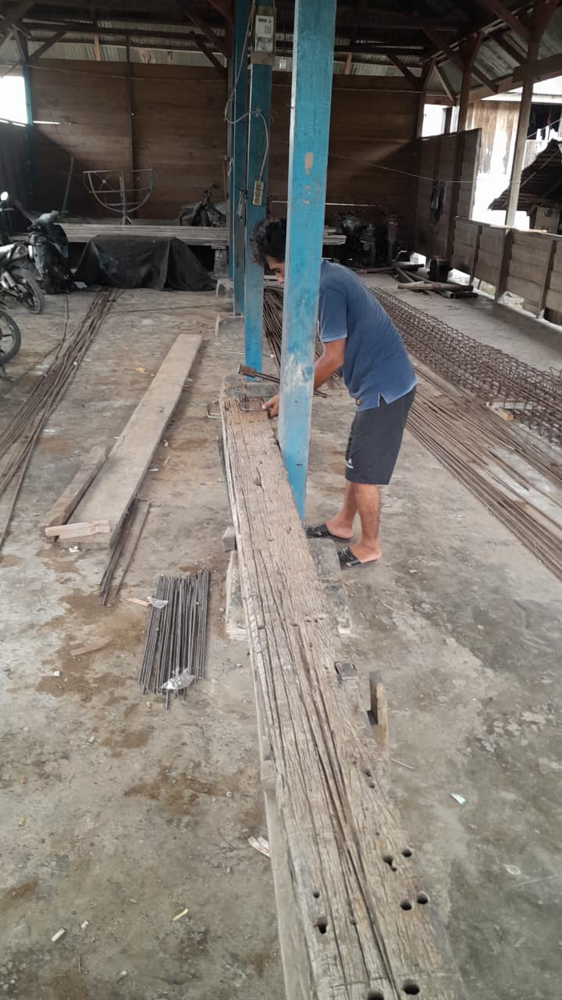
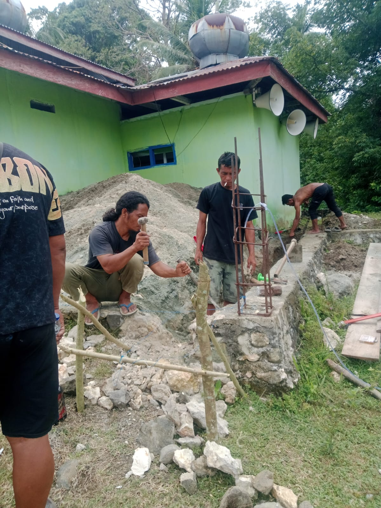
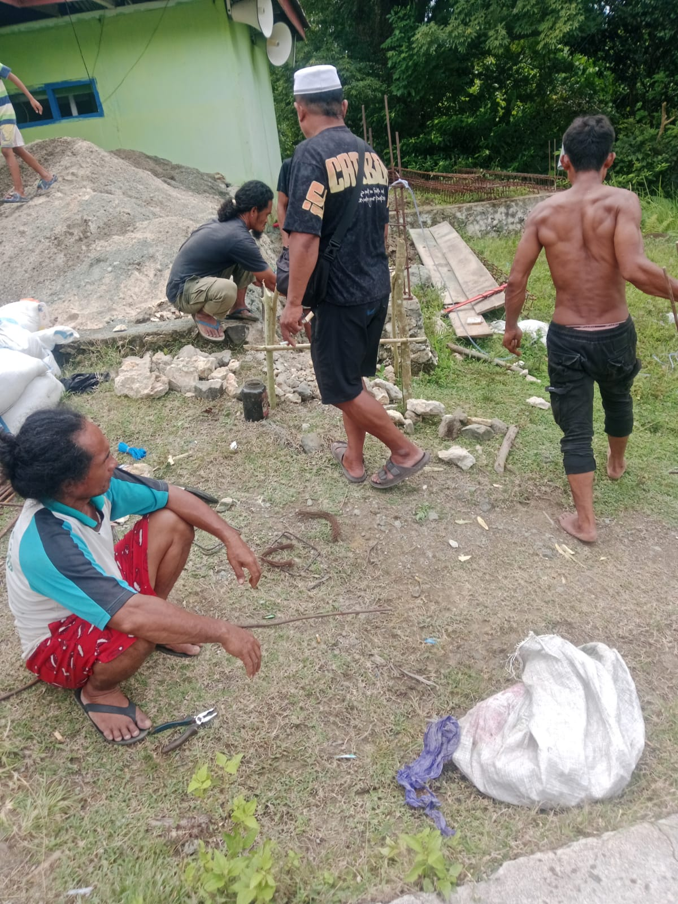
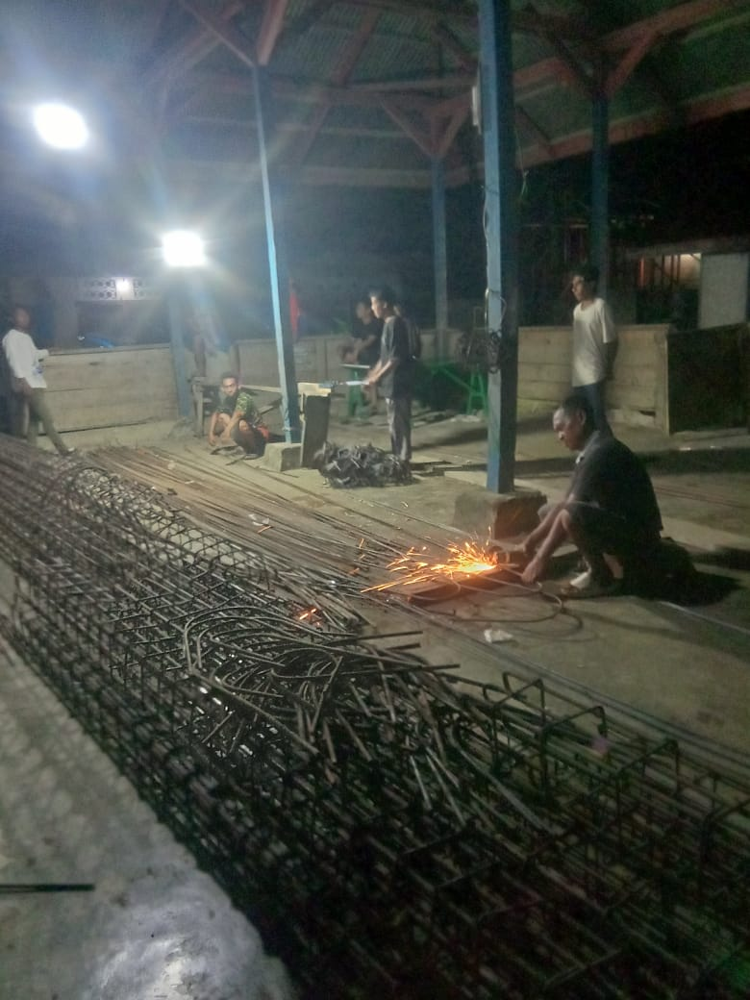
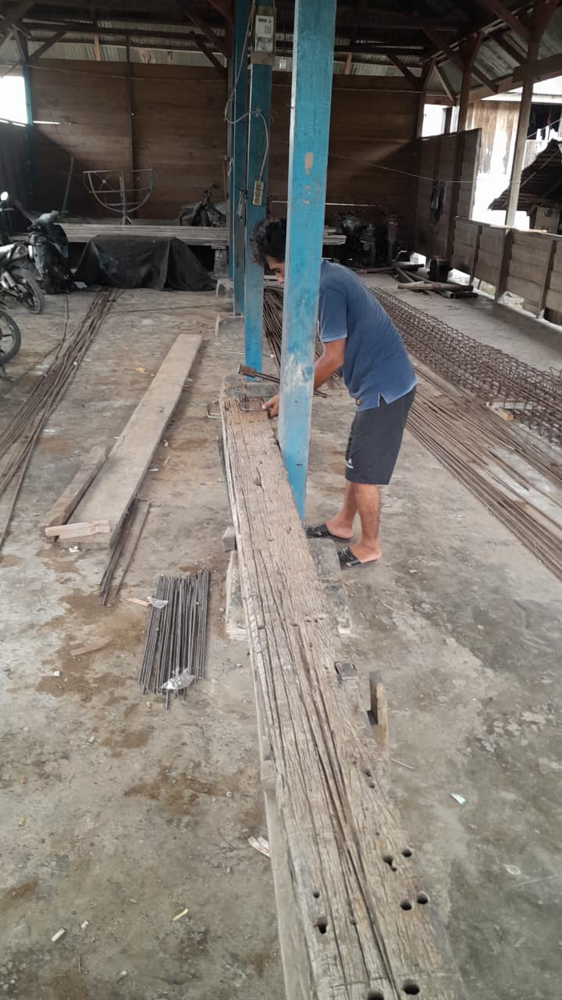
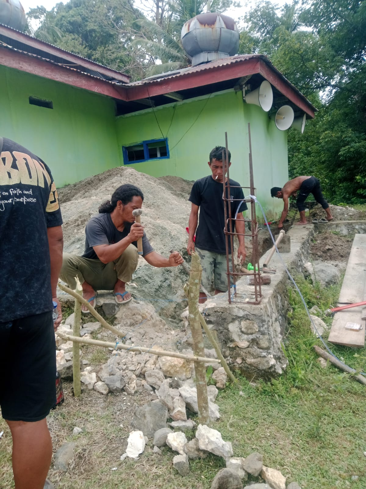
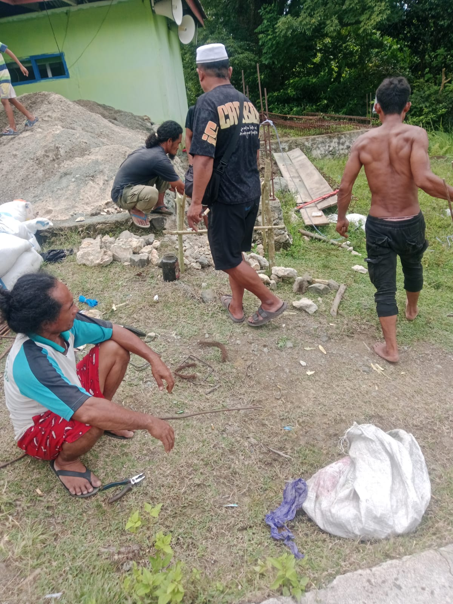
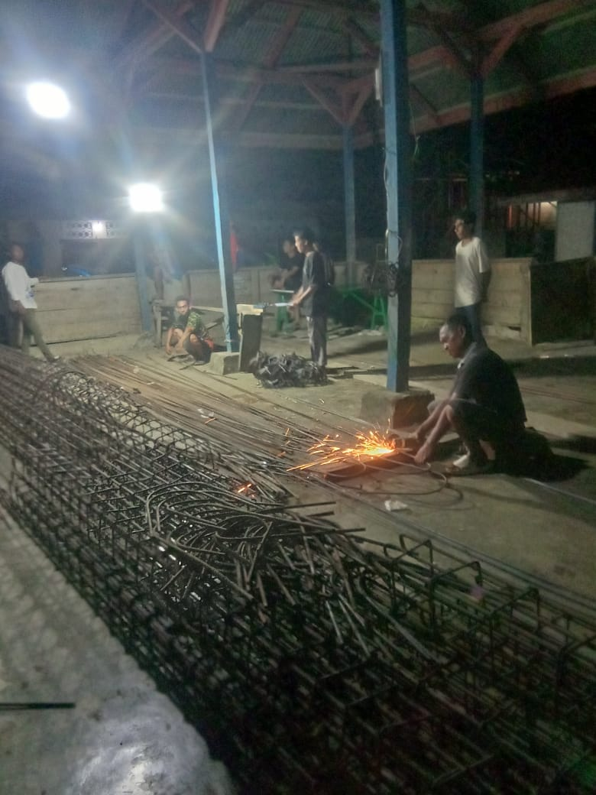

 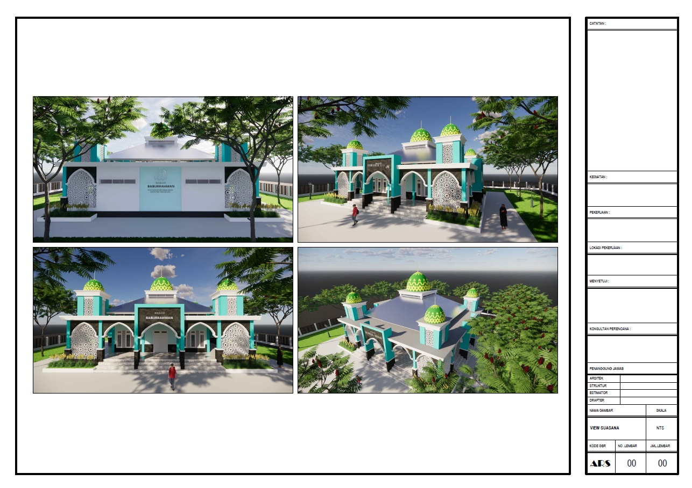
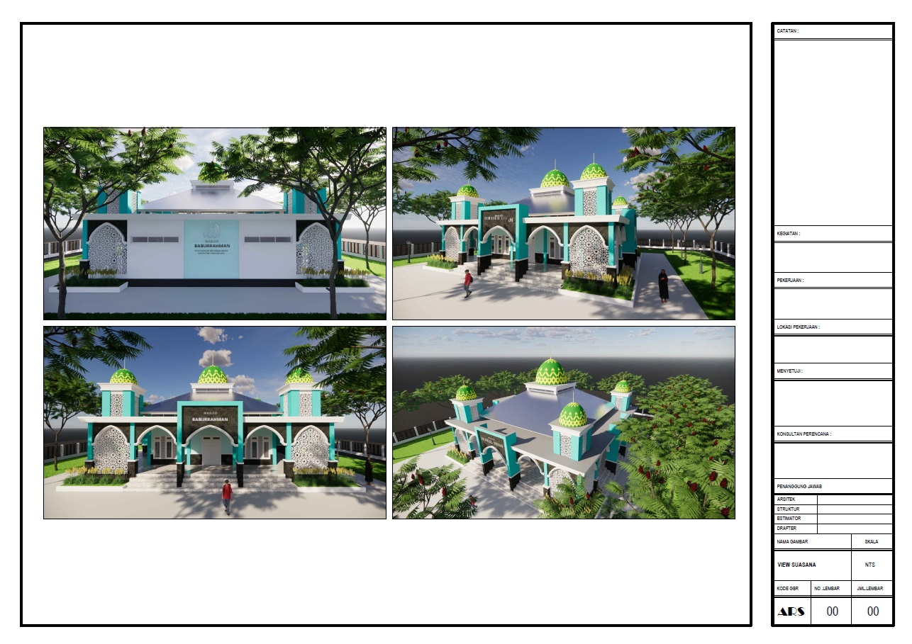
 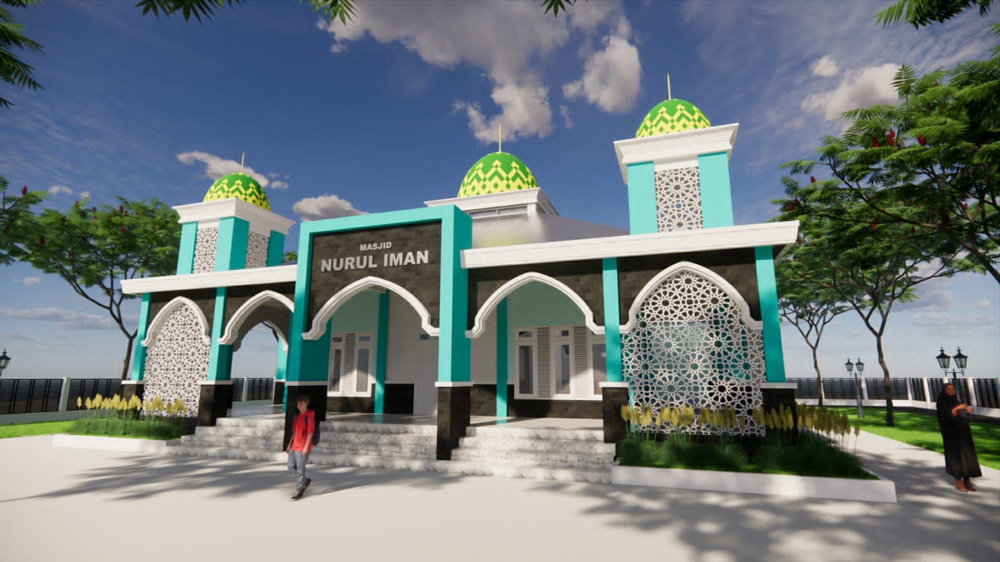
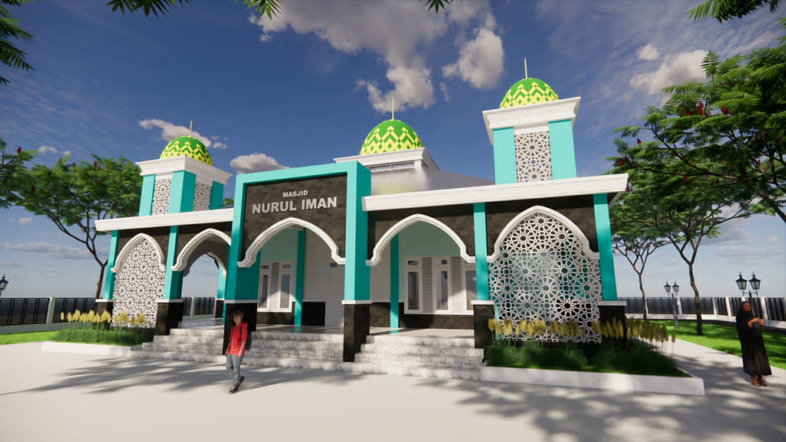